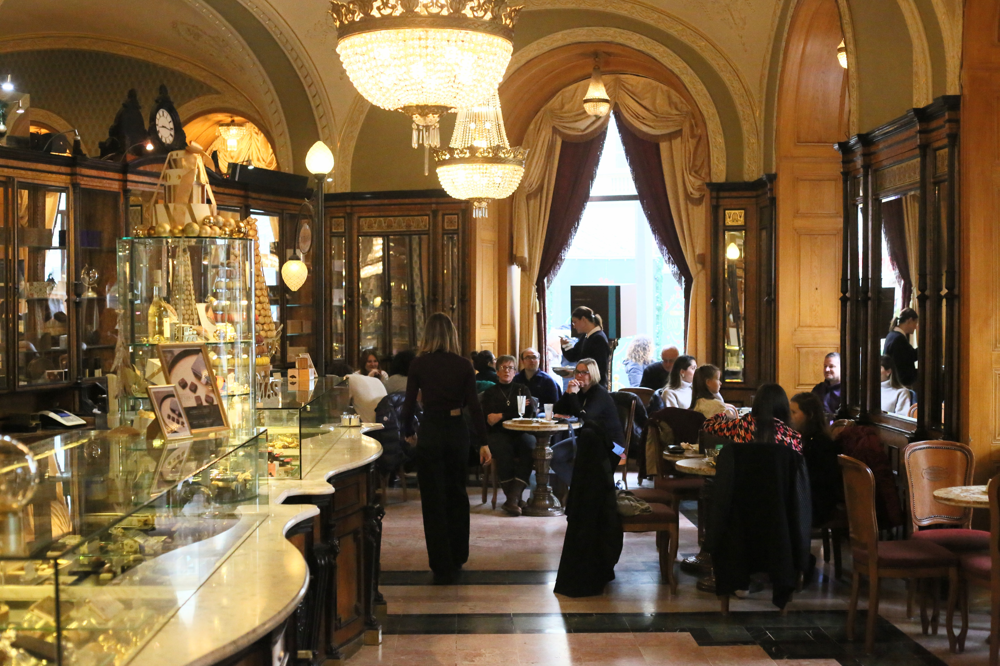

Kávézók
A kávézók a mindennapi élet kedvelt találkozóhelyei, ahol az emberek kikapcsolódhatnak, beszélgethetnek vagy pihenhetnek. Számos finom ital közül választhatunk, például cappuccino, latte, espresso vagy jegeskávé. A legtöbb kávézó süteményeket és különféle édességeket is kínál. Hangulatos berendezésük és kellemes légkörük miatt ideális helyszínek baráti találkozókhoz, tanuláshoz vagy akár munkához is. A kávézók tehát nemcsak a kávézásról, hanem a közös élményekről és a kikapcsolódásról is szólnak.

Gerbaud Kávéház
A Gerbeaud Budapest egyik legrégebbi és leghíresebb cukrászdája és kávéháza, a Vörösmarty téren található. 1858-ban Kugler Henrik alapította, később a svájci Gerbeaud Emil vitte tovább, róla kapta a nevét. Elegáns, régi stílusú termeiben csillárok és márványasztalok fogadják a vendégeket. Leghíresebb süteménye a zserbó, amelyet ma is sokan keresnek. A klasszikus kávék és sütemények miatt a turisták és a budapestiek kedvelt helye.

New York Cafe
A New York Kávéház Budapest egyik leghíresebb és legszebb kávéháza, amely elegáns, különleges belsőépítészetéről ismert. Gyönyörű csillárok, márványoszlopok és díszes mennyezet teszik különlegessé. Kínálatában kávékülönlegességek, sütemények és finom desszertek is megtalálhatók. Népszerű turistalátványosság és különleges helyszín a kikapcsolódásra.